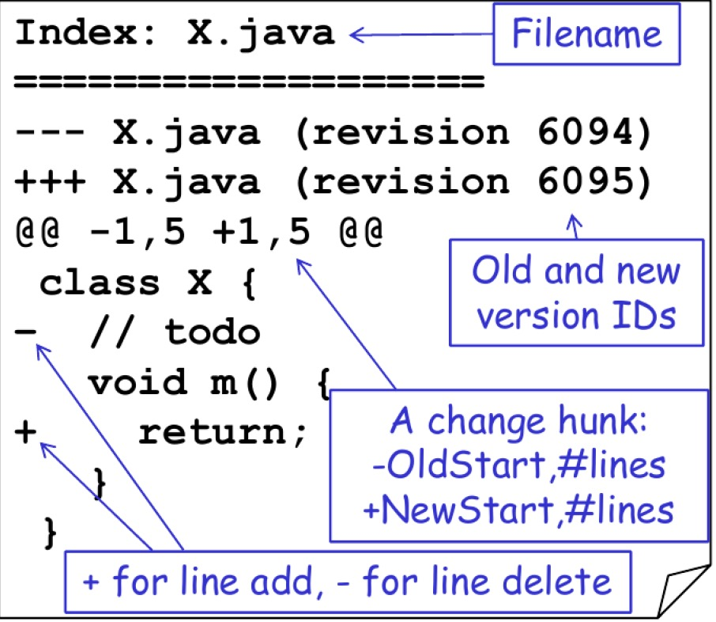

<!DOCTYPE html>
<html lang="en">
<head>
    <meta charset="utf-8">
    <meta http-equiv="X-UA-Compatible" content="IE=edge">
    <meta name="google-site-verification" content="xBT4GhYoi5qRD5tr338pgPM5OWHHIDR6mNg1a3euekI" />
    <meta name="viewport" content="width=device-width, initial-scale=1">
    <meta name="description" content="">
    <meta name="keyword"  content="">
    <link rel="shortcut icon" href="/img/favicon.ico">
    <script data-ad-client="ca-pub-5032777697872834" async src="https://pagead2.googlesyndication.com/pagead/js/adsbygoogle.js"></script>
    <title>
        
        Version Control Through and Through - Anran&#39;s Coding Elephant
        
    </title>

    <!-- Custom CSS -->
    
<link rel="stylesheet" href="/css/aircloud.css">

    
<link rel="stylesheet" href="/css/gitment.css">

    <!--<link rel="stylesheet" href="https://imsun.github.io/gitment/style/default.css">-->
    <link href="//at.alicdn.com/t/font_620856_pl6z7sid89qkt9.css" rel="stylesheet" type="text/css">
    <!-- ga & ba script hoook -->
    <script></script>
<meta name="generator" content="Hexo 4.2.1"></head>

<body>

<div class="site-nav-toggle" id="site-nav-toggle">
    <button>
        <span class="btn-bar"></span>
        <span class="btn-bar"></span>
        <span class="btn-bar"></span>
    </button>
</div>

<div class="index-about">
    <i> Sometimes rewarding, always fun </i>
</div>

<div class="index-container">
    
    <div class="index-left">
        
<div class="nav" id="nav">
    <div class="avatar-name">
        <div class="avatar ">
            
        </div>
        <div class="name">
            <i>Anran Niu</i>
        </div>
    </div>
    <div class="contents" id="nav-content">
        <ul>
            <li >
                <a href="/">
                    <i class="iconfont icon-shouye1"></i>
                    <span>HOME</span>
                </a>
            </li>
            
                <li>
                    <a id="search">
                        <i class="iconfont icon-sousuo1"></i>
                        <span>SEARCH</span>
                    </a>
                </li>
            
            <li >
                <a href="/tags">
                    <i class="iconfont icon-biaoqian1"></i>
                    <span>TAGS</span>
                </a>
            </li>
            <li >
                <a href="/archives">
                    <i class="iconfont icon-guidang2"></i>
                    <span>ARCHIVES</span>
                </a>
            </li>


            <li >
                <a href="/about/">
                    <i class="iconfont icon-guanyu2"></i>
                    <span>ABOUT</span>
                </a>
            </li>

        </ul>
    </div>
    
        <div id="toc" class="toc-article">
    <ol class="toc"><li class="toc-item toc-level-1"><a class="toc-link" href="#Dimensions-of-Version-Control"><span class="toc-text">Dimensions of Version Control</span></a><ol class="toc-child"><li class="toc-item toc-level-2"><a class="toc-link" href="#VC-system"><span class="toc-text">VC system</span></a><ol class="toc-child"><li class="toc-item toc-level-3"><a class="toc-link" href="#Central-Version-Control-Systems-vs-Distributed-Version-Control-Systems"><span class="toc-text">Central Version Control Systems vs. Distributed Version Control Systems:</span></a></li></ol></li><li class="toc-item toc-level-2"><a class="toc-link" href="#Best-Practices"><span class="toc-text">Best Practices</span></a><ol class="toc-child"><li class="toc-item toc-level-3"><a class="toc-link" href="#Coding-Style"><span class="toc-text">Coding Style</span></a></li><li class="toc-item toc-level-3"><a class="toc-link" href="#Commits"><span class="toc-text">Commits</span></a><ol class="toc-child"><li class="toc-item toc-level-4"><a class="toc-link" href="#Single-Logical-Changes"><span class="toc-text">Single Logical Changes</span></a></li><li class="toc-item toc-level-4"><a class="toc-link" href="#Don’t-break-the-build"><span class="toc-text">Don’t break the build</span></a></li><li class="toc-item toc-level-4"><a class="toc-link" href="#Avoid-Regressions"><span class="toc-text">Avoid Regressions</span></a></li><li class="toc-item toc-level-4"><a class="toc-link" href="#Non-critical-cleanup"><span class="toc-text">Non critical cleanup</span></a></li><li class="toc-item toc-level-4"><a class="toc-link" href="#Refactorings-in-single-commit"><span class="toc-text">Refactorings in single commit</span></a></li><li class="toc-item toc-level-4"><a class="toc-link" href="#Merge-global-changes-early"><span class="toc-text">Merge global changes early</span></a></li><li class="toc-item toc-level-4"><a class="toc-link" href="#Communicate-with-other-developers"><span class="toc-text">Communicate with other developers</span></a></li><li class="toc-item toc-level-4"><a class="toc-link" href="#Fix-hostpots-for-conflicts"><span class="toc-text">Fix hostpots for conflicts</span></a></li></ol></li><li class="toc-item toc-level-3"><a class="toc-link" href="#Merge-Commit"><span class="toc-text">Merge Commit</span></a></li><li class="toc-item toc-level-3"><a class="toc-link" href="#What-files-to-include-in-the-repository"><span class="toc-text">What files to include in the repository</span></a></li><li class="toc-item toc-level-3"><a class="toc-link" href="#Writing-a-good-commit-message"><span class="toc-text">Writing a good commit message</span></a></li><li class="toc-item toc-level-3"><a class="toc-link" href="#Git-Commands"><span class="toc-text">Git Commands</span></a></li><li class="toc-item toc-level-3"><a class="toc-link" href="#Git-Workflows"><span class="toc-text">Git Workflows</span></a></li></ol></li></ol></li><li class="toc-item toc-level-1"><a class="toc-link" href="#Diffs-in-Version-Control"><span class="toc-text">Diffs in Version Control</span></a><ol class="toc-child"><li class="toc-item toc-level-2"><a class="toc-link" href="#Unified-Diff-Format"><span class="toc-text">Unified Diff Format</span></a></li><li class="toc-item toc-level-2"><a class="toc-link" href="#Computing-Diff"><span class="toc-text">Computing Diff</span></a></li><li class="toc-item toc-level-2"><a class="toc-link" href="#Line-Based-Diffs"><span class="toc-text">Line Based Diffs</span></a><ol class="toc-child"><li class="toc-item toc-level-3"><a class="toc-link" href="#Edit-Script"><span class="toc-text">Edit Script</span></a></li><li class="toc-item toc-level-3"><a class="toc-link" href="#Edit-Graph"><span class="toc-text">Edit Graph</span></a></li><li class="toc-item toc-level-3"><a class="toc-link" href="#Summary-Computing-optimal-line-based-diffs"><span class="toc-text">Summary: Computing optimal line-based diffs</span></a></li></ol></li><li class="toc-item toc-level-2"><a class="toc-link" href="#Merge"><span class="toc-text">Merge</span></a><ol class="toc-child"><li class="toc-item toc-level-3"><a class="toc-link" href="#Three-way-merge"><span class="toc-text">Three-way merge</span></a></li></ol></li><li class="toc-item toc-level-2"><a class="toc-link" href="#Summary"><span class="toc-text">Summary</span></a></li></ol></li><li class="toc-item toc-level-1"><a class="toc-link" href="#Conflicts-and-Edits"><span class="toc-text">Conflicts and Edits</span></a><ol class="toc-child"><li class="toc-item toc-level-2"><a class="toc-link" href="#Understanding-different-conflicts"><span class="toc-text">Understanding different conflicts</span></a></li><li class="toc-item toc-level-2"><a class="toc-link" href="#parallel-vs-sequential-in-edit-scripts"><span class="toc-text">parallel vs sequential in edit scripts</span></a><ol class="toc-child"><li class="toc-item toc-level-3"><a class="toc-link" href="#Properties-of-parallel-and-sequential-operators"><span class="toc-text">Properties of parallel and sequential operators</span></a></li></ol></li><li class="toc-item toc-level-2"><a class="toc-link" href="#More-edit-operations-for-edit-scripts"><span class="toc-text">More edit operations for edit scripts</span></a><ol class="toc-child"><li class="toc-item toc-level-3"><a class="toc-link" href="#idxcv-scripts"><span class="toc-text">idxcv scripts</span></a></li><li class="toc-item toc-level-3"><a class="toc-link" href="#Edit-scripts-and-3-way-merge"><span class="toc-text">Edit scripts and 3-way merge</span></a></li><li class="toc-item toc-level-3"><a class="toc-link" href="#Logical-positions-in-a-string"><span class="toc-text">Logical positions in a string</span></a></li><li class="toc-item toc-level-3"><a class="toc-link" href="#Logical-change-with-fuzzy-patching"><span class="toc-text">Logical change with fuzzy patching</span></a><ol class="toc-child"><li class="toc-item toc-level-4"><a class="toc-link" href="#Fuzzy-patching-patterns"><span class="toc-text">Fuzzy patching patterns</span></a></li><li class="toc-item toc-level-4"><a class="toc-link" href="#How-fuzzy-patching-simplifies-rewrites"><span class="toc-text">How fuzzy patching simplifies rewrites</span></a></li></ol></li><li class="toc-item toc-level-3"><a class="toc-link" href="#POSIX-ENF-convention"><span class="toc-text">POSIX ENF convention</span></a></li><li class="toc-item toc-level-3"><a class="toc-link" href="#Textual-conflict-for-logical-positions"><span class="toc-text">Textual conflict for logical positions</span></a></li><li class="toc-item toc-level-3"><a class="toc-link" href="#Merge-with-nested-changes"><span class="toc-text">Merge with nested changes</span></a><ol class="toc-child"><li class="toc-item toc-level-4"><a class="toc-link" href="#Nested-changes-explained-with-commutativity"><span class="toc-text">Nested changes explained with commutativity</span></a></li></ol></li></ol></li><li class="toc-item toc-level-2"><a class="toc-link" href="#Summary-1"><span class="toc-text">Summary</span></a></li></ol></li><li class="toc-item toc-level-1"><a class="toc-link" href="#Refactorings-and-merge"><span class="toc-text">Refactorings and merge</span></a><ol class="toc-child"><li class="toc-item toc-level-2"><a class="toc-link" href="#Refactoring-with-ra"><span class="toc-text">Refactoring with ra()</span></a><ol class="toc-child"><li class="toc-item toc-level-3"><a class="toc-link" href="#ra-intended-to-be-unsupervised"><span class="toc-text">ra() intended to be unsupervised.</span></a></li></ol></li><li class="toc-item toc-level-2"><a class="toc-link" href="#Merging-idxcvra-scripts"><span class="toc-text">Merging idxcvra scripts</span></a><ol class="toc-child"><li class="toc-item toc-level-3"><a class="toc-link" href="#Example-1"><span class="toc-text">Example 1</span></a></li><li class="toc-item toc-level-3"><a class="toc-link" href="#Example-2"><span class="toc-text">Example 2</span></a></li></ol></li><li class="toc-item toc-level-2"><a class="toc-link" href="#Summary-2"><span class="toc-text">Summary</span></a></li></ol></li><li class="toc-item toc-level-1"><a class="toc-link" href="#Next-Steps"><span class="toc-text">Next Steps</span></a></li></ol>
</div>
    
</div>


<div class="search-field" id="search-field">
    <div class="search-container">
        <div class="search-input">
            <span id="esc-search"> <i class="icon-fanhui iconfont"></i></span>
            <input id="search-input"/>
            <span id="begin-search">search</span>
        </div>
        <div class="search-result-container" id="search-result-container">

        </div>
    </div>
</div>

        <div class="index-about-mobile">
            <i> Sometimes rewarding, always fun </i>
        </div>
    </div>
    
    <div class="index-middle">
        <!-- Main Content -->
        


<div class="post-container">
    <div class="post-title">
        Version Control Through and Through
    </div>

    <div class="post-meta">
        <span class="attr">Post：<span>2020-04-07 10:46:58</span></span>
        
        <span class="attr">Tags：/
        
        <a class="tag" href="/tags/#git" title="git">git</a>
        <span>/</span>
        
        <a class="tag" href="/tags/#basic concepts" title="basic concepts">basic concepts</a>
        <span>/</span>
        
        
        </span>
        <span class="attr">Visit：<span id="busuanzi_value_page_pv"></span>
</span>
</span>
    </div>
    <div class="post-content ">
        <p>This blog is based on course materials by Dr. Gerald Weber. I find it hard to focus on learning these concepts, so I decide drive myself with some output.</p>
<h1 id="Dimensions-of-Version-Control"><a href="#Dimensions-of-Version-Control" class="headerlink" title="Dimensions of Version Control"></a>Dimensions of Version Control</h1><h2 id="VC-system"><a href="#VC-system" class="headerlink" title="VC system"></a>VC system</h2><p>Version Control System has two spaces:</p>
<ul>
<li>Product space, for the code files.</li>
<li>Meta space, for the version histories.<h3 id="Central-Version-Control-Systems-vs-Distributed-Version-Control-Systems"><a href="#Central-Version-Control-Systems-vs-Distributed-Version-Control-Systems" class="headerlink" title="Central Version Control Systems vs. Distributed Version Control Systems:"></a>Central Version Control Systems vs. Distributed Version Control Systems:</h3>DVCS allows work offline and enables different workflows.<h2 id="Best-Practices"><a href="#Best-Practices" class="headerlink" title="Best Practices"></a>Best Practices</h2><h3 id="Coding-Style"><a href="#Coding-Style" class="headerlink" title="Coding Style"></a>Coding Style</h3>Need to decide on a code style among the team. Use style checker if possible/ configure your IDE.<br>Side note: <a href="https://www.npmjs.com/package/prettier" target="_blank" rel="noopener">prettier</a> is an opinionated code formatter that enforces a consistent style by parsing your code and re-printing it with its own rules. You can have your own <a href="https://prettier.io/docs/en/configuration.html" target="_blank" rel="noopener">configurations</a>.<h3 id="Commits"><a href="#Commits" class="headerlink" title="Commits"></a>Commits</h3><h4 id="Single-Logical-Changes"><a href="#Single-Logical-Changes" class="headerlink" title="Single Logical Changes"></a>Single Logical Changes</h4>So that changes can be better adopted/cherry picked, and easier to review.<h4 id="Don’t-break-the-build"><a href="#Don’t-break-the-build" class="headerlink" title="Don’t break the build"></a>Don’t break the build</h4>Only commit changes that preserve system integrity.<br>Avoid commits that fixes other commits, e.g. “Add changes missing from previous commit”: <strong>Rework history instead.</strong><br>See the <a href="https://stackoverflow.com/questions/3103589/how-can-i-easily-fixup-a-past-commit" target="_blank" rel="noopener">fixup</a> commit argument to fix previous commits:<figure class="highlight plain"><table><tr><td class="gutter"><pre><span class="line">1</span><br><span class="line">2</span><br><span class="line">3</span><br></pre></td><td class="code"><pre><span class="line">$ git add ...                           # Stage a fix</span><br><span class="line">$ git commit --fixup&#x3D;a0b1c2d3           # Perform the commit to fix broken a0b1c2d3</span><br><span class="line">$ git rebase -i --autosquash a0b1c2d3~1 # Now merge fixup commit into broken commit</span><br></pre></td></tr></table></figure>
<h4 id="Avoid-Regressions"><a href="#Avoid-Regressions" class="headerlink" title="Avoid Regressions"></a>Avoid Regressions</h4>run unit tests before committing<br>keep test suite up-to-date<br>communicate about manual testing<h4 id="Non-critical-cleanup"><a href="#Non-critical-cleanup" class="headerlink" title="Non critical cleanup"></a>Non critical cleanup</h4>Keep noncritical cleanup/reformatting separate from functional changes.<h4 id="Refactorings-in-single-commit"><a href="#Refactorings-in-single-commit" class="headerlink" title="Refactorings in single commit"></a>Refactorings in single commit</h4>Similarly, refactoring does not expect to change functions, but influences a lot of code. Communicate about refactoring so that everyone has the up-to-date version.<h4 id="Merge-global-changes-early"><a href="#Merge-global-changes-early" class="headerlink" title="Merge global changes early"></a>Merge global changes early</h4>All branches might need to consolidate and prepare for merging the global cleanup/refactoring changes. Merge them early to avoid hard conflicts.<h4 id="Communicate-with-other-developers"><a href="#Communicate-with-other-developers" class="headerlink" title="Communicate with other developers"></a>Communicate with other developers</h4>Regular review and cleanup activities.<br>Discuss and agree on a design.<br>Check if someone else is working on the same part to avoid conflicts.<h4 id="Fix-hostpots-for-conflicts"><a href="#Fix-hostpots-for-conflicts" class="headerlink" title="Fix hostpots for conflicts"></a>Fix hostpots for conflicts</h4>If some part of the code often cause merge conflicts, it might indicate important design flaw/issue: not decoupled with other modules enough, too much dependencies, etc.</li>
</ul>
<h3 id="Merge-Commit"><a href="#Merge-Commit" class="headerlink" title="Merge Commit"></a>Merge Commit</h3><p><strong>Merge should only contain changes from the three-way<br>merge</strong><br>A merge commit should only contain changes that fix the commit. Don’t add new things while resolving the conflict.</p>
<h3 id="What-files-to-include-in-the-repository"><a href="#What-files-to-include-in-the-repository" class="headerlink" title="What files to include in the repository"></a>What files to include in the repository</h3><p>Usually commit only source files, not generated files.<br>Do include platform independent build instructions in the repository too, but not IDE specific files or local configs.<br>No files that can be generated by the build system.<br>Read more about the <a href="https://help.github.com/en/github/using-git/ignoring-files" target="_blank" rel="noopener">.gitignore</a> file. You can set <strong>global</strong> .gitignore file for your machine and keep the project .gitignore file specific to the project itself. Go to <a href="https://github.com/github/gitignore" target="_blank" rel="noopener">github/gitignore</a> and <a href="https://www.gitignore.io/" target="_blank" rel="noopener">gitignore.io</a> to download/generate your .gitignore file.</p>
<h3 id="Writing-a-good-commit-message"><a href="#Writing-a-good-commit-message" class="headerlink" title="Writing a good commit message"></a>Writing a good commit message</h3><p>The seven rules of a great Git commit message, from <a href="https://chris.beams.io/posts/git-commit/" target="_blank" rel="noopener">this website</a></p>
<ol>
<li>Separate subject from body with a blank line (<strong>The block line separating the subject and the body is critical: various tools like ‘log’ and ‘rebase’ can get confused if you run the two together.</strong>)</li>
<li>Limit the subject line to 50 characters</li>
<li>Capitalize the subject line</li>
<li>Do not end the subject line with a period</li>
<li>Use the imperative mood in the subject line<br>(A properly formed subject line will complete the sentence:<br>If applied, this commit will <u>your subject line here</u>)</li>
<li>Wrap the body at 72 characters</li>
<li>Use the body to explain <strong>what and why</strong> vs. how. The diff will explain the how.</li>
</ol>
<p>If you use an issue tracker, put references to them at the bottom, like this:</p>
<figure class="highlight plain"><table><tr><td class="gutter"><pre><span class="line">1</span><br><span class="line">2</span><br></pre></td><td class="code"><pre><span class="line">Resolves: #123</span><br><span class="line">See also: #456, #789</span><br></pre></td></tr></table></figure>

<h3 id="Git-Commands"><a href="#Git-Commands" class="headerlink" title="Git Commands"></a>Git Commands</h3><p><a href="https://www.atlassian.com/git/tutorials/cherry-pick" target="_blank" rel="noopener">git cherry-pick</a><br>git cherry-pick is a powerful command that enables arbitrary Git commits to be picked by reference and appended to the current working HEAD.<br><a href="https://www.atlassian.com/git/tutorials/rewriting-history/git-rebase" target="_blank" rel="noopener">git rebase</a>:<br>Rebase is one of two Git utilities that specializes in integrating changes from one branch onto another. The other change integration utility is git merge . Merge is always a forward moving change record. Alternatively, rebase has powerful history rewriting features.<br><a href="https://www.atlassian.com/git/tutorials/inspecting-a-repository/git-blame" target="_blank" rel="noopener">git blame</a><br>The high-level function of git blame is the display of author metadata attached to specific committed lines in a file.<br>When you are interested in finding the origin for lines 40-60 for file foo, you can use the -L option like so (they mean the same thing — both ask for 21 lines starting at line 40):</p>
<figure class="highlight plain"><table><tr><td class="gutter"><pre><span class="line">1</span><br><span class="line">2</span><br></pre></td><td class="code"><pre><span class="line">git blame -L 40,60 foo</span><br><span class="line">git blame -L 40,+21 foo</span><br></pre></td></tr></table></figure>

<h3 id="Git-Workflows"><a href="#Git-Workflows" class="headerlink" title="Git Workflows"></a>Git Workflows</h3><p>See a great article discussing git workflows <a href="https://www.atlassian.com/git/tutorials/comparing-workflows" target="_blank" rel="noopener">here</a>.</p>
<ul>
<li>Centralised workflow</li>
<li>Featured branches/ Topic branches. Discussed <a href="https://nvie.com/posts/a-successful-git-branching-model/" target="_blank" rel="noopener">here</a>. </li>
<li>Forking workflow</li>
<li>Gitflow workflow</li>
</ul>
<p>Guidelines:</p>
<ul>
<li>Short-lived branches</li>
<li>Minimize and simplify reverts (it’s beneficial to have a workflow that allows for easy reverts that will not disrupt the flow for other team members.)</li>
<li>Match a release schedule</li>
</ul>
<h1 id="Diffs-in-Version-Control"><a href="#Diffs-in-Version-Control" class="headerlink" title="Diffs in Version Control"></a>Diffs in Version Control</h1><p>Idea: represent change as operations on the file.</p>
<p>Diffs/patches are important for developers:</p>
<ul>
<li>to review their own changes</li>
<li>to review changes/patches made by other people</li>
<li>to apply the patch to other versions of the code</li>
</ul>
<h2 id="Unified-Diff-Format"><a href="#Unified-Diff-Format" class="headerlink" title="Unified Diff Format"></a>Unified Diff Format</h2><p>Operation model:</p>
<ul>
<li>only insert and deletion</li>
<li>changes are applied in parallel<br>See <a href="https://www.gnu.org/software/diffutils/manual/html_node/Example-Unified.html#Example-Unified" target="_blank" rel="noopener">here</a> for an example of unified diff format.</li>
</ul>


<h2 id="Computing-Diff"><a href="#Computing-Diff" class="headerlink" title="Computing Diff"></a>Computing Diff</h2><p><code>diff[v-&gt;w]</code>, or <code>diff(v,w)</code> is a diff transforming v into w.<br><code>udiff[v-&gt;w]</code>, or <code>udiff(v,w)</code> is a unified diff transforming v into w.</p>
<h2 id="Line-Based-Diffs"><a href="#Line-Based-Diffs" class="headerlink" title="Line Based Diffs"></a>Line Based Diffs</h2><p>Operate on a string of lines</p>
<ul>
<li>A “string of lines” means, that the alphabet is the set of all possible individual lines.</li>
<li>The actual diff algorithm is therefore a diff of strings over<br>any character set C.<h3 id="Edit-Script"><a href="#Edit-Script" class="headerlink" title="Edit Script"></a>Edit Script</h3>Finding the smallest edit script between two versions:<br><a href="https://medium.com/@marvinraval99/longest-common-subsequence-lcs-using-dynamic-programming-2d77e6d9d683" target="_blank" rel="noopener">Largest common subsequence (LCS)</a></li>
</ul>
<p>The size of the smallest insert/delet edit script is called the<br><a href="https://web.stanford.edu/class/cs124/lec/med.pdf" target="_blank" rel="noopener">Levenshtein distance</a>. </p>
<h3 id="Edit-Graph"><a href="#Edit-Graph" class="headerlink" title="Edit Graph"></a>Edit Graph</h3><p>Directed Acyclic Graph (DAG)</p>
<ul>
<li>top left corner: origin</li>
<li>bottom right corner: sink</li>
<li>every path from origin to sink represents an edit script</li>
<li>Vertices:<ul>
<li>column labels after 0 given by source string</li>
<li>row labels after 0 given by target string</li>
</ul>
</li>
<li>Edges:<ul>
<li>vertical downward move: edit: insert column label of<br>endpoint of the edge.</li>
<li>horizontal move right: edit: delete row label of endpoint</li>
<li>diagonal move: keep, no edit, no change; requires matching column/row labels on endpoint. Diagonal move is available when the column label and row label at the endpoint are the same.</li>
</ul>
</li>
<li>Paths:<ul>
<li>The path to upper right corner, then down to sink: first delete whole source string, then insert whole target string.</li>
<li>every path from origin to bottom right corner represents<br>an edit script.</li>
</ul>
</li>
</ul>
<h3 id="Summary-Computing-optimal-line-based-diffs"><a href="#Summary-Computing-optimal-line-based-diffs" class="headerlink" title="Summary: Computing optimal line-based diffs"></a>Summary: Computing optimal line-based diffs</h3><p>Equivalent to:</p>
<ul>
<li>finding the largest common subsequence (LCS)</li>
<li>finding the shortest edit path (D-path)</li>
<li>finding the minimum cost path<br>Greedy Principle</li>
<li>its enough to search on the furthest reaching D-paths to<br>find optimal solution</li>
<li>Runtime O((N + M)D), or with input length n as O(nD)   </li>
</ul>
<h2 id="Merge"><a href="#Merge" class="headerlink" title="Merge"></a>Merge</h2><h3 id="Three-way-merge"><a href="#Three-way-merge" class="headerlink" title="Three-way merge"></a>Three-way merge</h3><p>Take parent into account, and do the following three steps:</p>
<ul>
<li>For both Dev A and B, do diff relative to parent.</li>
<li>apply both patches in parallel</li>
<li>if both patches change the same line -&gt; conflict</li>
</ul>
<p>If an automatic merge is not possible (because of conflicts),<br>conflicts can be solved using a merge tool.</p>
<ul>
<li><a href="https://www.npmjs.com/package/npm-merge-driver" target="_blank" rel="noopener">npm-merge-driver</a> can be used  for automatic merging of lockfiles - you can install it globally into your machine:<figure class="highlight plain"><table><tr><td class="gutter"><pre><span class="line">1</span><br></pre></td><td class="code"><pre><span class="line">$ npx npm-merge-driver install --global</span><br></pre></td></tr></table></figure>
<ul>
<li>Fork provides graphical three-way merge tool.</li>
<li><a href="http://meldmerge.org/" target="_blank" rel="noopener">meld</a> is a visual diff and merge tool targeted at developers: haven’t found out about it yet.</li>
</ul>
</li>
</ul>
<h2 id="Summary"><a href="#Summary" class="headerlink" title="Summary"></a>Summary</h2><p>Diffs are fundamental for dealing with different versions<br>of a file.</p>
<ul>
<li>create diffs</li>
<li>apply diffs</li>
<li>3 way merge to incorporate concurrent changes of the<br>same file<br>Diffs are computed as edit scripts.</li>
<li>Our standard diffs are insert/delete scripts on lines.</li>
<li>We are usually interested in the smallest edit script; it<br>also identifies the largest common subsequence.</li>
<li>Can be computed in O(nD) time, in practice often even<br>faster. n is the length of input (M+N, M and N are length of start and end versions), and D is the number of differences.</li>
</ul>


<h1 id="Conflicts-and-Edits"><a href="#Conflicts-and-Edits" class="headerlink" title="Conflicts and Edits"></a>Conflicts and Edits</h1><p>We now look at edit scripts with more operations: move, copy, cut/paste, and replaceAll.</p>
<h2 id="Understanding-different-conflicts"><a href="#Understanding-different-conflicts" class="headerlink" title="Understanding different conflicts"></a>Understanding different conflicts</h2><ul>
<li>Textual Conflicts: Edits in the same line, detected by merge tools</li>
<li>Semantic Conflicts: logical conflicts (e.g. method signature change)<br>Both textual and semantic conflicts must be resolved by user.</li>
</ul>
<h2 id="parallel-vs-sequential-in-edit-scripts"><a href="#parallel-vs-sequential-in-edit-scripts" class="headerlink" title="parallel vs sequential in edit scripts"></a>parallel vs sequential in edit scripts</h2><p>The comma is an operator, requires that for (s,r) the edit scripts s and r can be merged: edit scripts can be executed on the same source.<br>For a general edit script we also define sequential execution of edits, denoted with semicolon: (s;r)<br>In (s;r) the edit r is executed on the result of s:</p>
<figure class="highlight plain"><table><tr><td class="gutter"><pre><span class="line">1</span><br></pre></td><td class="code"><pre><span class="line">d(2,1), i(4,’hi’) &#x3D; d(2,1); i(3,’hi’)</span><br></pre></td></tr></table></figure>

<h3 id="Properties-of-parallel-and-sequential-operators"><a href="#Properties-of-parallel-and-sequential-operators" class="headerlink" title="Properties of parallel and sequential operators"></a>Properties of parallel and sequential operators</h3><ul>
<li>The comma (s,r) is commutative and associative.<ul>
<li><code>(d(2,1),i(4,&#39;hi&#39;)) = (i(4, &#39;hi&#39;), d(2,1))</code></li>
<li><code>(d(2,1), i(4,&#39;hi&#39;)), d(7,1) = d(2,1)(i(4,&#39;hi&#39;), d(7,1))</code></li>
<li>Therefore, we use sorted order wherever possible.</li>
</ul>
</li>
<li>The semicolon (s;r) is associative.<ul>
<li><code>(d(2,1);i(3,&#39;hi&#39;));d(7,1) = d(2,1);(i(3,&#39;hi&#39;); d(7,1))</code></li>
</ul>
</li>
<li>We can compose more complex edit scripts.<ul>
<li>`(d(2,1), i(3,’hi’),i(5,’.’));d(7,1) = d(2,1), i(3,’hi’)</li>
</ul>
</li>
</ul>
<blockquote>
<p><strong>edits that are combined with the parallel comma operator may be undefined: this models a textual conflict.</strong></p>
</blockquote>
<h2 id="More-edit-operations-for-edit-scripts"><a href="#More-edit-operations-for-edit-scripts" class="headerlink" title="More edit operations for edit scripts"></a>More edit operations for edit scripts</h2><ul>
<li>Operations beyond insert/delete:<ul>
<li>move, copy/cut + paste, replaceAll</li>
</ul>
</li>
<li>Important question:<ul>
<li>How do merges work with new operations?<br>Finding strictly minimal edit script can become more complicated.</li>
</ul>
</li>
</ul>
<p><strong>Operation replaceAll cannot be reconstructed with certainty from change file.</strong><br>But: With new operations, </p>
<ul>
<li>Some concrete merges may become easier.</li>
<li>We may understand semantic conflicts better.</li>
</ul>
<h3 id="idxcv-scripts"><a href="#idxcv-scripts" class="headerlink" title="idxcv scripts"></a>idxcv scripts</h3><p>delete <code>d(pos, count)</code>, insert <code>i(posB, string)</code>,<br>cut <code>x(pos, count, X)</code>, the buffer is X<br>copy <code>c(pos, count, X)</code><br>paste <code>v(posB, X)</code><br>cut/paste operations can be combined with the parallel operator:<br>    <code>x(a,b,X),v(d,X) = v(d,X),x(a,b,X)</code><br>Idxcv scripts can be applied to a text:<br><code>(x(1,1,X), v(6,X))(&#39;!hello&#39;) = &#39;hello!&#39;</code><br>Question: What is the result of the following expression?</p>
<figure class="highlight plain"><table><tr><td class="gutter"><pre><span class="line">1</span><br></pre></td><td class="code"><pre><span class="line">x(7,1,X);v(6,X); d(2,1); v(1,X)(’hello u’) &#x3D;?</span><br></pre></td></tr></table></figure>
<figure class="highlight plain"><table><tr><td class="gutter"><pre><span class="line">1</span><br><span class="line">2</span><br></pre></td><td class="code"><pre><span class="line">1 2 3 4 5 6 7</span><br><span class="line">h e l l o _ u</span><br></pre></td></tr></table></figure>
<p>After x(7,1,X);v(6,x), no change really happens:<br>Note that posB of x or c starts right at that position, while for v and i the content is added right <strong>behind</strong> the given start position</p>
<figure class="highlight plain"><table><tr><td class="gutter"><pre><span class="line">1</span><br><span class="line">2</span><br><span class="line">3</span><br></pre></td><td class="code"><pre><span class="line">1 2 3 4 5 6 7</span><br><span class="line">h e l l o _ u</span><br><span class="line">Buffer: u</span><br></pre></td></tr></table></figure>
<p>After d(2,1):</p>
<figure class="highlight plain"><table><tr><td class="gutter"><pre><span class="line">1</span><br><span class="line">2</span><br><span class="line">3</span><br></pre></td><td class="code"><pre><span class="line">1 2 3 4 5 6 7</span><br><span class="line">h l l o _ u </span><br><span class="line">Buffer: u</span><br></pre></td></tr></table></figure>
<p>After v(1,X):</p>
<figure class="highlight plain"><table><tr><td class="gutter"><pre><span class="line">1</span><br><span class="line">2</span><br><span class="line">3</span><br></pre></td><td class="code"><pre><span class="line">1 2 3 4 5 6 7</span><br><span class="line">h u l l o _ u</span><br><span class="line">Buffer: u</span><br></pre></td></tr></table></figure>

<h3 id="Edit-scripts-and-3-way-merge"><a href="#Edit-scripts-and-3-way-merge" class="headerlink" title="Edit scripts and 3-way merge"></a>Edit scripts and 3-way merge</h3><p>We have said that a 3-way merge combines work done on two branches in parallel.</p>
<ul>
<li>The work in the two branches since the common ancestors can be represented as two idxcv scripts, lets name them p and q. The ancestor s is in our model simply a string.</li>
<li>Then the result of the 3-way merge is (p,q)(s).</li>
<li>We can now look at p and q and see if there is a conflict.</li>
<li>If branch p has three individual commits, then it can be written as p = <code>(p1; p2; p3)</code> separated by the semicolon operator. The 3-way merge is now <code>((p1; p2; p3), q)(s)</code> and this may help us understand at which stage a possible conflict occurred.</li>
</ul>
<p><strong>Question: should the following edit script result in a conflict? If not, what’s the result?</strong></p>
<figure class="highlight plain"><table><tr><td class="gutter"><pre><span class="line">1</span><br></pre></td><td class="code"><pre><span class="line">((x(1,5,X), v(10,X)), (d(2,1); i(1,’u’)))(’hello_hi!_’)</span><br></pre></td></tr></table></figure>
<p>No. can be merged without conflict.</p>
<figure class="highlight plain"><table><tr><td class="gutter"><pre><span class="line">1</span><br><span class="line">2</span><br></pre></td><td class="code"><pre><span class="line">1 2 3 4 5 6 7 8 9 10</span><br><span class="line">h e l l o _ h i ! _</span><br></pre></td></tr></table></figure>
<p>After <code>(x(1,5,X), v(10,X))</code>:</p>
<figure class="highlight plain"><table><tr><td class="gutter"><pre><span class="line">1</span><br><span class="line">2</span><br></pre></td><td class="code"><pre><span class="line">1 2 3 4 5 6 7 8 9 10</span><br><span class="line">_ h i ! _ h e l l o</span><br></pre></td></tr></table></figure>
<p>In parallel, after <code>((d(2,1); i(1,’u’)))</code>:</p>
<figure class="highlight plain"><table><tr><td class="gutter"><pre><span class="line">1</span><br><span class="line">2</span><br></pre></td><td class="code"><pre><span class="line">1 2 3 4 5 6 7 8 9 10</span><br><span class="line">h u l l o _ h i ! _</span><br></pre></td></tr></table></figure>
<p>Merge the above two versions together:</p>
<figure class="highlight plain"><table><tr><td class="gutter"><pre><span class="line">1</span><br><span class="line">2</span><br></pre></td><td class="code"><pre><span class="line">1 2 3 4 5 6 7 8 9 10</span><br><span class="line">_ h i ! _ h u l l o</span><br></pre></td></tr></table></figure>
<h3 id="Logical-positions-in-a-string"><a href="#Logical-positions-in-a-string" class="headerlink" title="Logical positions in a string"></a>Logical positions in a string</h3><ul>
<li>The above merge works because we adopt the view that each character in the string has an identity.</li>
<li>This identity is not affected by change of its index</li>
<li>Standard model is <strong>text as an OO(doubly) linked list.</strong></li>
<li>The logical positions that we are interested in our operations are based on a character’s context:<ul>
<li>its position before a character</li>
<li>its position after a character</li>
</ul>
</li>
</ul>
<h3 id="Logical-change-with-fuzzy-patching"><a href="#Logical-change-with-fuzzy-patching" class="headerlink" title="Logical change with fuzzy patching"></a>Logical change with fuzzy patching</h3><h4 id="Fuzzy-patching-patterns"><a href="#Fuzzy-patching-patterns" class="headerlink" title="Fuzzy patching patterns"></a>Fuzzy patching patterns</h4><p><strong>fuzzy patching operators: patterns instead of numbers.</strong><br><code>x(’the &gt;’, ’&lt;fox’,X), v(’r the &gt;’, X)( ’the lazy fox jumps
 over the red cat’)</code><br> = <code>the fox jumps over the lazy red cat</code></p>
<ul>
<li>patterns: ad-hoc(as necessary) identifiers of logical positions:<ul>
<li>prefix: pattern for position after a character: ’the &gt;</li>
<li>suffix: pattern for position before a character: ’&lt;fox”</li>
<li>fuzzy patching operators: patterns instead of numbers.</li>
<li>i(), v() have a single pattern as position, d(), x(), c() have<br>two patterns as positions.<h4 id="How-fuzzy-patching-simplifies-rewrites"><a href="#How-fuzzy-patching-simplifies-rewrites" class="headerlink" title="How fuzzy patching simplifies rewrites"></a>How fuzzy patching simplifies rewrites</h4></li>
</ul>
</li>
<li>Often no rewriting needed if we switch from parallel to sequential operation:<br><code>x(’the &gt;’, ’&lt;fox’,X), v(’r the &gt;’, X)</code>=<code>x(’the &gt;’, ’&lt;fox’,X); v(’r the &gt;’, X)</code></li>
<li>But fuzzy patching needs space for a <strong>unique</strong> pattern.</li>
</ul>
<p><strong>If the pattern is disturbed, we obviously have to repair it, so we need rewrites for such cases.</strong><br> <code>x(’Hi&gt;’, ’&lt;, H’,X), v(’Jo,&gt;’, X)(’Hi Jo, Hello, great’)</code><br> =<br> <code>x(’Hi&gt;’, ’&lt;, H’,X); v(’Hi,&gt;’, X)(’Hi Jo, Hello, great’)</code><br> =<br> <code>&#39;Hi, Jo Hello, great&#39;</code><br> = <code>i(&#39;Hi,&gt;&#39;, &#39; Jo&#39;)(&#39;Hi, Hello, great&#39;)</code></p>
<h3 id="POSIX-ENF-convention"><a href="#POSIX-ENF-convention" class="headerlink" title="POSIX ENF convention"></a>POSIX ENF convention</h3><p> We might want to identify the ends of the input in the pattern. We agree to use the same signs as in POSIX regular expressions:</p>
<ul>
<li>The <code>ˆ</code> matches the start of the string.</li>
<li>The <code>$</code> matches the end of the string.<figure class="highlight plain"><table><tr><td class="gutter"><pre><span class="line">1</span><br></pre></td><td class="code"><pre><span class="line">(x(’ˆthe &gt;’, ’&lt;fox j’,X), v(’r the &gt;’, X))( ’the lazy fox and the quick fox jumped over the red cat’)</span><br></pre></td></tr></table></figure>
The result is:<br>‘the fox jumped over the lazy fox and the quick red cat’</li>
</ul>
<h3 id="Textual-conflict-for-logical-positions"><a href="#Textual-conflict-for-logical-positions" class="headerlink" title="Textual conflict for logical positions"></a>Textual conflict for logical positions</h3><ul>
<li>Clear case of textual conflict: Two parallel inserts/pastes at the same logical position, which means:<ul>
<li>both at the same before-position or at the same after-position.</li>
<li>Reason it is a conflict: because of parallelism, not clear which one goes first.</li>
<li>This conflict case is the equivalent of the textual conflicts in udiff-based diff tools.</li>
</ul>
</li>
<li>By contrast, two parallel inserts between the same characters, but one at the before-position and one at the after-position, create no conflict: result is clear.<ul>
<li>This case cannot be expressed in udiff tools.   </li>
</ul>
</li>
</ul>
<h3 id="Merge-with-nested-changes"><a href="#Merge-with-nested-changes" class="headerlink" title="Merge with nested changes"></a>Merge with nested changes</h3><ul>
<li>If a change in one version fully nests within a cut of a move of a parallel version, there is no conflict.<br><code>((x(’r the &gt;’, ’&lt;cat’,X); v(’ˆthe &gt;’,X)),d(’pretty &gt;’, ’&lt;red’))(’the fox jumps over the pretty much red cat’)</code><br>= ‘the pretty red fox jumps over the cat’</li>
<li>What would be the outcome for ins/del edit script?<ul>
<li>an insert of ’the pretty much red fox’ plus a textual conflict at the delete position: Has the word “much” been deleted when we insert “the pretty … red” part before the fox?</li>
</ul>
</li>
<li>what about d() in parallel with surrounding d()? Isn’t this simply a d()?<br>  -Problem: We don’t know whether the surrounding d() is an x() for a later v()! If so, then the insert/delete merge would give the wrong result.</li>
</ul>
<p><strong>Therefore, with the rich operation model, we can perform more automatic merges.</strong></p>
<h4 id="Nested-changes-explained-with-commutativity"><a href="#Nested-changes-explained-with-commutativity" class="headerlink" title="Nested changes explained with commutativity"></a>Nested changes explained with commutativity</h4><ul>
<li>If a change in one version fully nests within a cut of a move of a parallel version, there is no conflict:</li>
<li>If they nest properly, they do not interfere. In other words, they commute. Execution in each order yields the same result.</li>
<li>The commutativity expresses the fact that the logical position for the inner change is available before and after the change.</li>
</ul>
<h2 id="Summary-1"><a href="#Summary-1" class="headerlink" title="Summary"></a>Summary</h2><ul>
<li>Logical positions refer to identities of characters in the text.</li>
<li>Logical positions can be given with patterns for <strong>fuzzy patching</strong>.</li>
<li>Rewriting of operations is often not necessary when switching from comma to semicolon.</li>
<li>Textual conflicts can be specified in the extended model.</li>
<li>Logical positions explain why more merges are possible in our extended operation model, while the udiff(insert/delete) model might cause conflicts in the same situations.</li>
</ul>
<h1 id="Refactorings-and-merge"><a href="#Refactorings-and-merge" class="headerlink" title="Refactorings and merge"></a>Refactorings and merge</h1><h2 id="Refactoring-with-ra"><a href="#Refactoring-with-ra" class="headerlink" title="Refactoring with ra()"></a>Refactoring with ra()</h2><p>Scenario: One developer renames a public function in all appearances, and the other developer, in parallel, makes a call to the function with the old function name. The udiff-based 3-way merge tool does not produce a textual conflict for just these changes, but this conflict may be trapped in typed languages at compile time, or generally at unit test time.</p>
<p>We extend the idxcv scripts with a replaceAll operation ra() intended to be unsupervised =&gt; idxcvra</p>
<blockquote>
<p>Syntax: <code>ra(oldstring, newstring)</code> replaces all occurrences of string oldstring with newstring.</p>
</blockquote>
<h3 id="ra-intended-to-be-unsupervised"><a href="#ra-intended-to-be-unsupervised" class="headerlink" title="ra() intended to be unsupervised."></a>ra() intended to be unsupervised.</h3><p>Replaces all old string with new string</p>
<h2 id="Merging-idxcvra-scripts"><a href="#Merging-idxcvra-scripts" class="headerlink" title="Merging idxcvra scripts"></a>Merging idxcvra scripts</h2><h3 id="Example-1"><a href="#Example-1" class="headerlink" title="Example 1"></a>Example 1</h3><p><code>(ra(’copy’, ’scan’), i(0, ’0. copy attachments, ’))(’1. copy letter, 2. copy invoice’)</code><br>Because ra() is unsupervised, safe merge result option is<br>’0. scan attachments, 1. scan letter, 2. scan invoice’</p>
<p><code>i(0, ’0. copy attachments, ’))</code> is based on text <strong>before</strong> ra() and should be considered to intend to refer to the function named m before the rename.</p>
<p><strong>what if the 3-way merge is performed by an i()/d() based merge tool?</strong><br>The effect of ra() gets translated into two i()/d() operation pairs, for the existing matches only. Overall result: ’0. copy attachments, 1. scan letter, 2. scan invoice’ -&gt; A likely semantic conflict.</p>
<h3 id="Example-2"><a href="#Example-2" class="headerlink" title="Example 2"></a>Example 2</h3><figure class="highlight plain"><table><tr><td class="gutter"><pre><span class="line">1</span><br><span class="line">2</span><br></pre></td><td class="code"><pre><span class="line">(（ra(&#39;m(&#39;, &#39;p(&#39;); i(0, &#39;m(s)&#123;p(&quot;out: &quot; + s);&#125;&#39;)),</span><br><span class="line">i(&#39;&lt;$&#39;, &#39;m(&quot;hi&quot;);&#39;))(&#39;m(s)&#123;println(s);&#125;m(&quot;hello&quot;);&#39;)</span><br></pre></td></tr></table></figure>
<p>Because the programmer A writing <code>i(&#39;&lt;$&#39;, &#39;m(&quot;hi&quot;);&#39;))</code> would not know about the parallel branch <code>i(0, &#39;m(s){p(&quot;out: &quot; + s);}&#39;))</code>, we have to assume that A is not aware of the refactoring and is trying to call the old function <code>m</code>.<br>Therefore the result is</p>
<figure class="highlight plain"><table><tr><td class="gutter"><pre><span class="line">1</span><br></pre></td><td class="code"><pre><span class="line">(&#39;m(s)&#123;p(&quot;out: &quot; + s);&#125;p(s)&#123;println(s);&#125;p(&quot;hello&quot;);&#39;p(&quot;hi&quot;);)</span><br></pre></td></tr></table></figure>
<h2 id="Summary-2"><a href="#Summary-2" class="headerlink" title="Summary"></a>Summary</h2><ul>
<li>One classic semantic conflict: conflict between a refactoring (a rename) and a new function call to the function under the old name.</li>
<li>If we see replaceAll as a distinct operation ra(), we can avoid the conflict and produce a safe merge result.</li>
<li>In determining the merge result we use the semantics of<br>ra() as <strong>unsupervised</strong> replaceAll.</li>
</ul>
<h1 id="Next-Steps"><a href="#Next-Steps" class="headerlink" title="Next Steps"></a>Next Steps</h1><ul>
<li>Learn more about greedy algorithms</li>
<li>Learn more about git in command lines and in graphical tools.</li>
</ul>
<p></p>

        
        <br />
        <div id="comment-container">
        </div>
        <div id="disqus_thread"></div>

        <div id="lv-container">
        </div>

    </div>
</div>

    </div>
</div>


<footer class="footer">
    <ul class="list-inline text-center">
        <span style="font-size:1rem;font-weight:lighter">Link with Anran at:</span>
        
        

        

        

        
        <li>
            <a target="_blank"  href="https://github.com/niuniuanran">
                            <span class="fa-stack fa-lg">
                                <i class="iconfont icon-github"></i>
                            </span>
            </a>
        </li>
        

        
        <li>
            <a target="_blank"  href="https://www.linkedin.com/in/anran-niu-897b4b197">
                            <span class="fa-stack fa-lg">
                                <i class="iconfont icon-linkedin"></i>
                            </span>
            </a>
        </li>
        

    </ul>
    
    <p>
        Created With <a href="https://hexo.io/" target="_blank" rel="noopener">Hexo</a>  Theme <a href="https://github.com/aircloud/hexo-theme-aircloud" target="_blank" rel="noopener">AirCloud</a></p>
</footer>


</body>

<script>
    // We expose some of the variables needed by the front end
    window.hexo_search_path = "search.json"
    window.hexo_root = "/"
    window.isPost = true
</script>
<script src="https://cdn.bootcss.com/jquery/3.3.1/jquery.min.js"></script>

<script src="/js/index.js"></script>

<script async src="//busuanzi.ibruce.info/busuanzi/2.3/busuanzi.pure.mini.js"></script>


</html>
